Ingénieur spécialité Télécommunications
Formation Bac+5 | 3 années | 180 crédits ECTS
Le programme s'appuie sur 4 piliers : Réseaux, Informatique, Communications numériques, Traitement du Signal & IA.
"J'ai rejoint la filière Télécoms car j'étais très intéressé par le monde de l'embarqué. J'ai très vite découvert que les télécoms sont partout et que leur maîtrise est essentielle au monde de demain. J'ai finalement eu l'occasion de travailler sur l'IA, les communications satellites, la programmation système mais aussi le fonctionnement des réseaux. Cette formation m'a permis de prendre part à des projets internationaux et à des projets de groupes. Je travaille désormais dans une entreprise de cybersécurité en Suisse."
Présentation
L'objectif du cursus consiste à former des ingénieurs aux domaines des technologies de l'information, des réseaux et des télécommunications. La formation concerne le déploiement des objets connectés et des produits intelligents qui fédèrent des capacités de traitement de l'information et de communication avec leur environnement (Réseaux & Sécurité, communications numériques, génie logiciel, Data & IA).
Les 4 piliers de la formation
📡 Réseaux & Sécurité
Sécurité des systèmes d'information, IoT, blockchain, virtualisation, administration réseaux
💻 Informatique
Programmation, systèmes d'exploitation, développement d'applications et génie logiciel
📶 Communications Numériques
Systèmes de communication, codage canal, communications multi-antennes
🎯 Traitement du Signal & de l'Image
Probabilités & statistiques, optimisation, IA, traitement radar et du signal biomédical
Programme de formation
Objectifs
Les trois premiers semestres sont organisés autour de thématiques générales aux télécommunications. Les 2 derniers semestres sont dédiés à des options de spécialisation.
Trois stages d'une durée cumulée de 12 mois permettent une immersion progressive en France ou à l'étranger.
Labels et Accréditations
CTI Formation accréditée par la Commission des Titres d'Ingénieur.
EUR-ACE Label européen attestant la qualité de nos programmes.
Organisation des Stages
| Stage | Durée | Période | Type de missions |
|---|---|---|---|
| 1ère année — Stage découverte | 1 à 2 mois | Fin mai – fin août | Découverte de l'entreprise et du métier d'ingénieur |
| 2ème année — Stage d'application | 3 à 4 mois | Fin mai – fin septembre | Mise en situation sur des problèmes techniques |
| 3ème année — Projet de fin d'études | 5 à 6 mois | Février – Septembre | Mission d'envergure suivie dans son intégralité |
Spécialisations de 3ème année
🔒 Réseaux, Sécurité et Objets Connectés (RSC)
Management du risque, IoT, blockchain, sécurité du SI
🤖 Apprentissage Image Signal Communications (AISC)
Machine learning avancé, systèmes 5G multi-antennes, GPS, biomédical
⚙️ Génie Logiciel des Réseaux et Télécommunications (GLRT)
Architectures logicielles, développement Web/mobile, systèmes distribués
Les + de la formation
- La pédagogie par projets dans toutes les années et thématiques
- Parrainage d'entreprises (Orange, Thales, Eviden, Cdiscount)
- Télécom Lab : espace dédié aux projets
- Personnalisation du cursus dès le 2ème semestre de 2A
- Renforcement de l'anglais scientifique (cours, rapports et soutenances en anglais)
- Mobilité internationale de minimum 17 semaines obligatoire
Dimension internationale
Une mobilité internationale de minimum 17 semaines est obligatoire. L'école dispose de partenariats avec plus de 150 universités dans le monde entier.
Corps Enseignant
Une équipe d'enseignants-chercheurs de renommée internationale
Prof. Éric Grivel
Professeur des Universités
🎓 Parcours :
- Diplôme d'ingénieur en électronique + Thèse (2000)
- ATER (2000) → Maître de conférences (2001) → Professeur (2011)
- 25 ans d'enseignement en Télécommunications
🌍 Collaborations : Canada · Espagne · Suisse · Italie · Inde · Liban · Japon
- 2021-2025 : VP Relations internationales — Bordeaux INP
- 2014-2022 : Directeur académique GIS Albatros (THALES)
- 2010-2017 : Directeur du département Télécom
Dr. Philippe Swartvagher
Maître de Conférences | Spécialiste HPC
🎓 Formation : Ingénieur ENSEIRB-MATMECA + Thèse en Calcul Haute Performance (HPC)
- ✓ Passion réelle pour le sujet indispensable
- ✓ 3 ans demandent rigueur et gestion du temps
- ✓ L'ambiance d'équipe est essentielle
Prof. Charles Consel
Fondateur du département Télécom | Professeur des Universités
- Maître de conférences à Yale puis Oregon (4 ans)
- Professeur à Rennes puis ENSEIRB-MATMECA depuis 2000
- 20 ans à l'INRIA, aujourd'hui au LaBRI
- 1. Enseignement — Cours, TD, TP
- 2. Recherche — Travaux + financements
- 3. Administration — Emplois du temps, gestion
💡 "Étudier les technologies émergentes — il y a énormément de sujets capitaux à explorer !"
Domaines d'expertise de l'équipe
📡 Réseaux & Télécommunications
Architectures, protocoles, 5G/6G, virtualisation, téléphonie sur IP
🔒 Sécurité Informatique
Cryptographie, sécurité des réseaux, blockchain, cybersécurité
🤖 Intelligence Artificielle
Machine learning, deep learning, traitement d'images, maison connectée
💻 Calcul Haute Performance
HPC, programmation parallèle, simulation numérique
Projets S8 & S9
Projets avancés sur l'ensemble du semestre 8 (S8) puis du semestre 9 (S9).
Projets parrainés par des partenaires industriels : Thales, Atos.
Projets de 2ème année (S8)
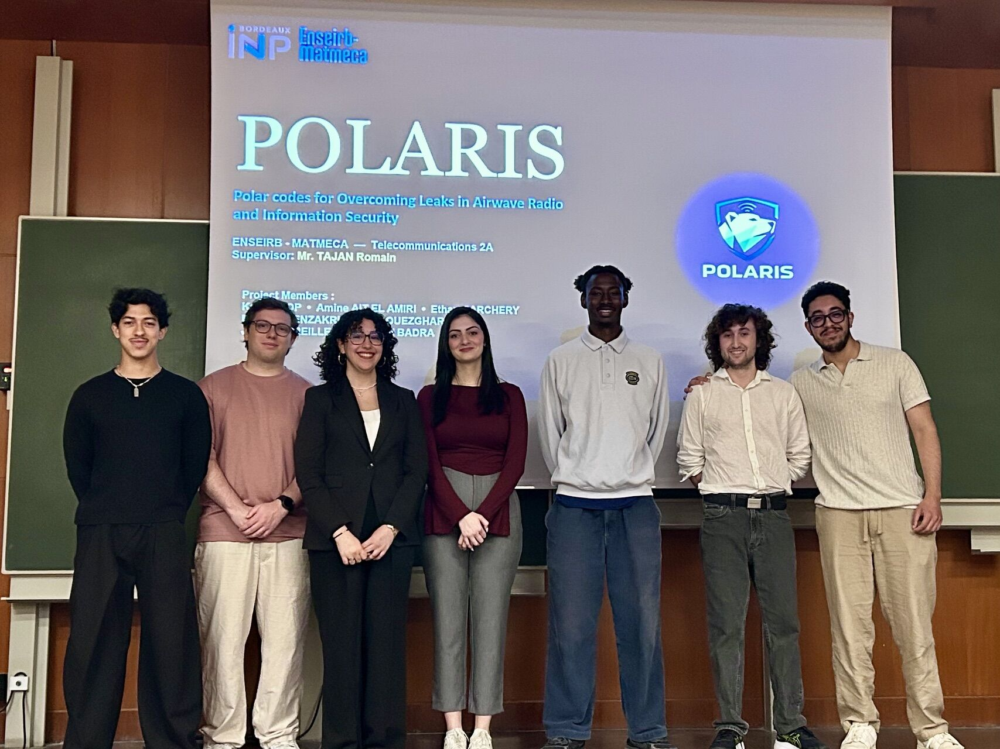
🔒 POLARIS
Polar codes pour la sécurité des communications sans fil
Implémentation de codes polaires (norme 5G) pour sécuriser les transmissions au niveau physique via AFF3CT et des radios logicielles.
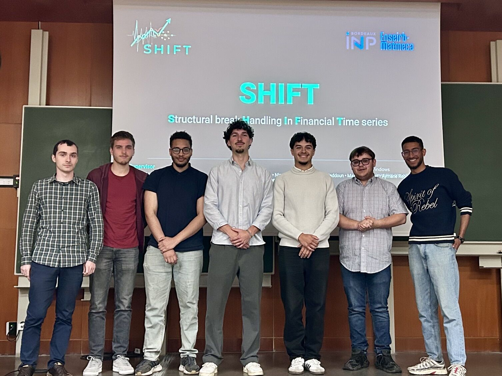
📈 SHIFT
Détection de ruptures dans les séries temporelles financières
Algorithmes pour détecter et classifier des changements structurels (volatilité, drift) dans des données financières réelles.
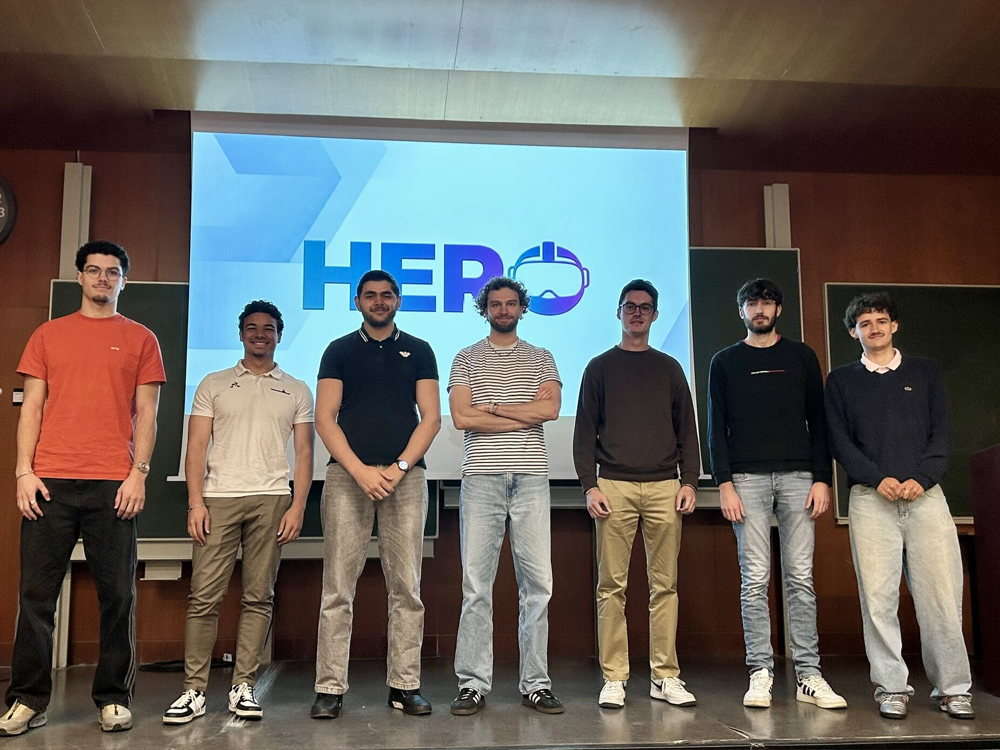
🤖 Digital Twin & 3D Interaction
Jumeau numérique et interaction humain-robot en réalité virtuelle
Pilotage à distance d'un robot via casque VR (MetaQuest 3), reconnaissance de gestes 3D et streaming par ordinateur.
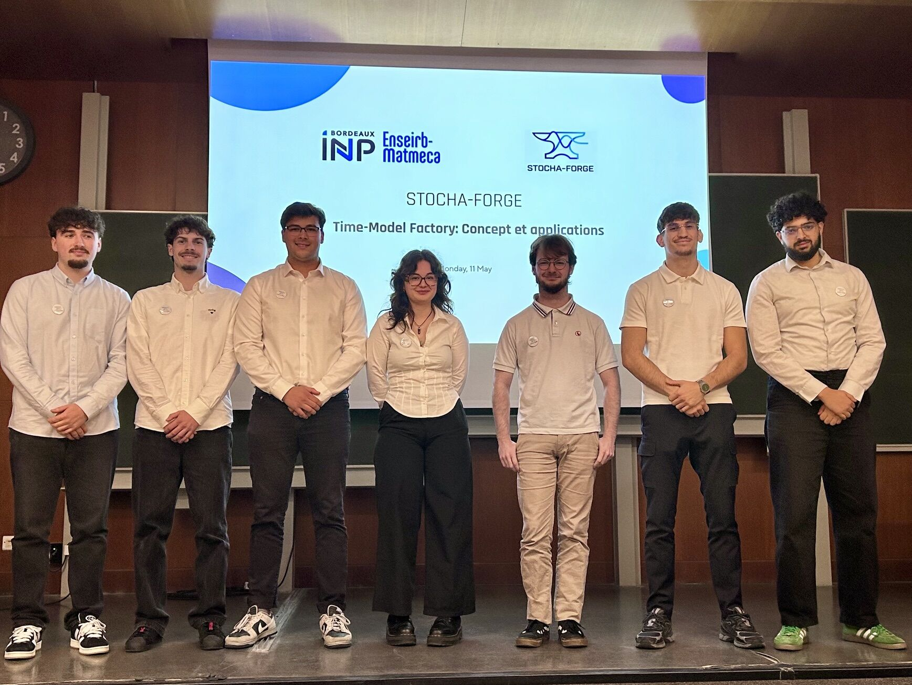
⏱️ Time-Model Factory
Environnement Matlab de modélisation et classification de signaux
Interface interactive pour générer, analyser et modéliser des signaux (AR, ARMA, GARCH…) avec applications en parole, finance et biomédical.
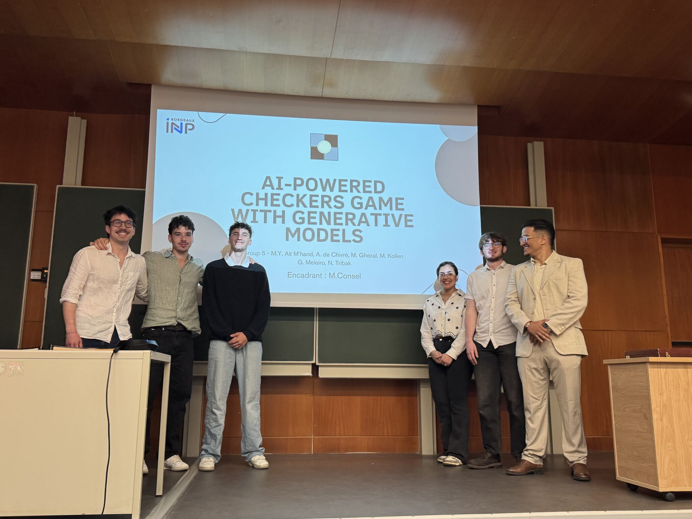
♟️ Jeu de Dames
Jeu de dames en JavaScript avec IA adversaire
Jeu web complet en mode 2 joueurs ou solo contre l'ordinateur, avec différents niveaux de difficulté et une interface ergonomique.
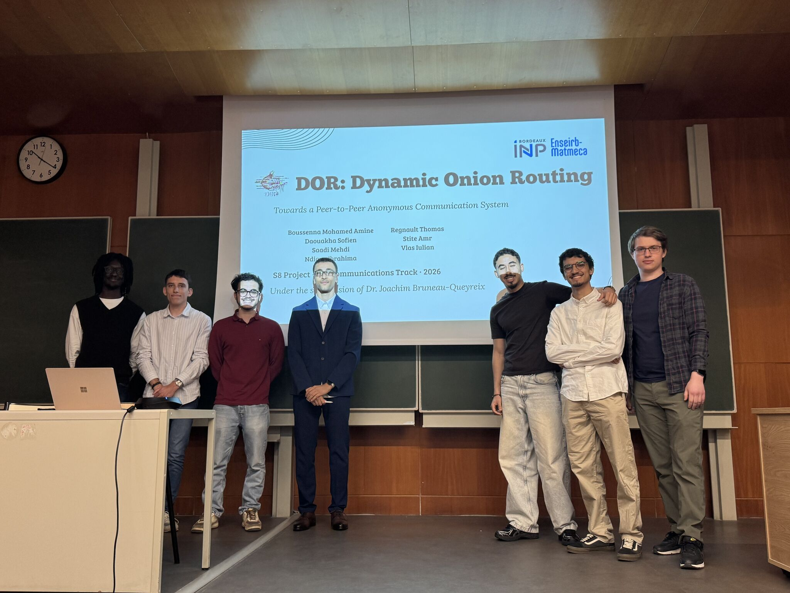
🧅 DOR — Dynamic Onion Routing
Système de communications anonymes pair-à-pair
Protocole de routage en oignon distribué avec évaluation de la résistance aux attaques.
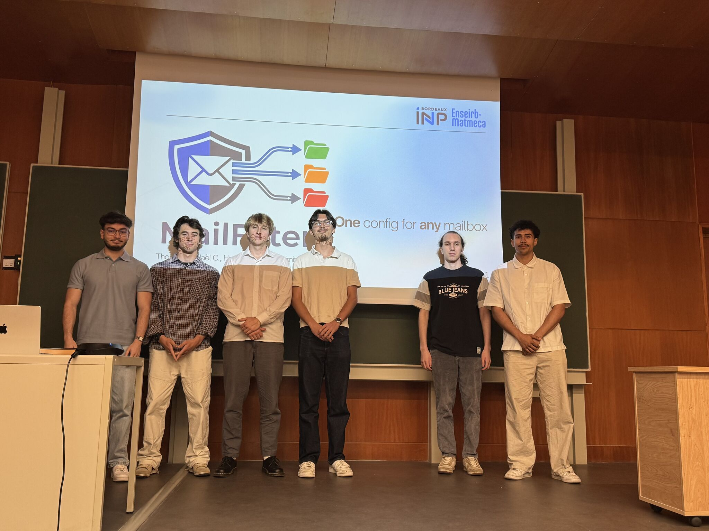
📧 MailFilter
Logiciel de tri d'emails multi-protocoles
Outil indépendant de filtrage d'emails supportant IMAP et Maildir, avec système de scripts et approche TDD.
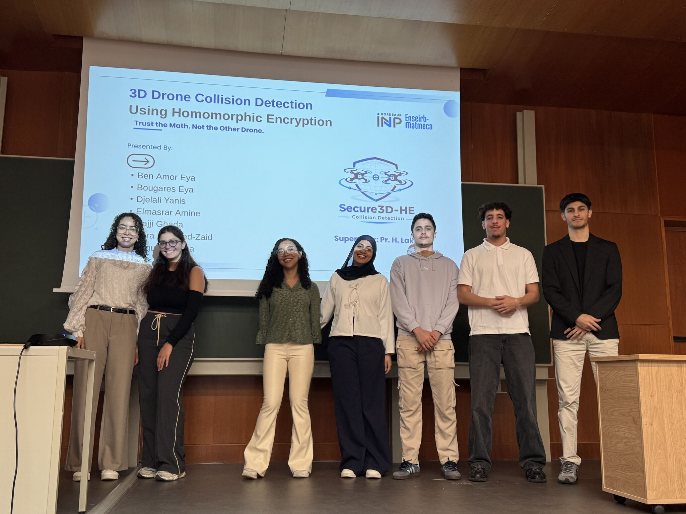
🚁 Détection de Collisions Drones
Déconfliction 3D chiffrée par chiffrement homomorphe
Détection de collisions entre drones en 3D sans révéler leurs trajectoires, via les schémas CKKS et TFHE (OpenFHE).
Projets de 3ème année (S9)
Les projets de S9 approfondissent des thématiques de recherche avancée et de développement système.
🖼️ Restauration d'Images par Diffusion
Deep learning & modèles génératifs pour la vision
Modèles de diffusion (DDPM, Flow Matching) pour la super-résolution et la restauration d'images météo-dégradées.
🎮 The Polar Game
Apprentissage par renforcement appliqué aux codes polaires
Jeu Python modélisant la construction de noyaux de codes polaires, avec interface graphique et optimisation automatique.
🛡️ KARMA
Filtre de Kalman contre les cyberattaques
Détection et mitigation de cyberattaques (injection, rejeu, DoS) via variantes du filtre de Kalman et IA.
🤖 Assistant IA & MCP
Application mobile de bien-être pilotée par l'IA
Application Flutter/Dart intégrant le protocole MCP (Anthropic) pour superviser les activités quotidiennes via capteurs.
☁️ Stockage Distribué Chiffré
Mini Dropbox sécurisé tolérant aux pannes
Stockage distribué avec chiffrement client, découpage en chunks, réplication multi-nœuds et interface web.
🔍 Détection de Fautes Distribuées
PeerReview vs LAMPv0 — protocoles d'audit comparés
Implémentation et évaluation comparative de deux protocoles de détection de fautes dans des systèmes distribués.
📡 Sécurisation Réseau IoT
Contiki OS & chiffrement homomorphe Paillier
Sécurisation d'un réseau de capteurs IoT simulé (6LoWPAN/RPL) via AES/TinySec et chiffrement Paillier sur Cooja.
Relations entreprises
🤝 Des partenariats solides avec les leaders de l'industrie
La filière Télécommunications entretient des liens étroits avec le monde professionnel
Nos partenaires industriels
Entreprises partenaires actives dans les domaines des Télécommunications, Réseaux, Cybersécurité et Technologies numériques :
🛒 Cdiscount — Visite partenaire
Nos étudiants ont eu l'opportunité de visiter les entrepôts logistiques de Cdiscount, l'un de nos partenaires industriels phares. Une immersion dans les coulisses d'un leader du e-commerce, entre automatisation, Big Data et systèmes temps réel.
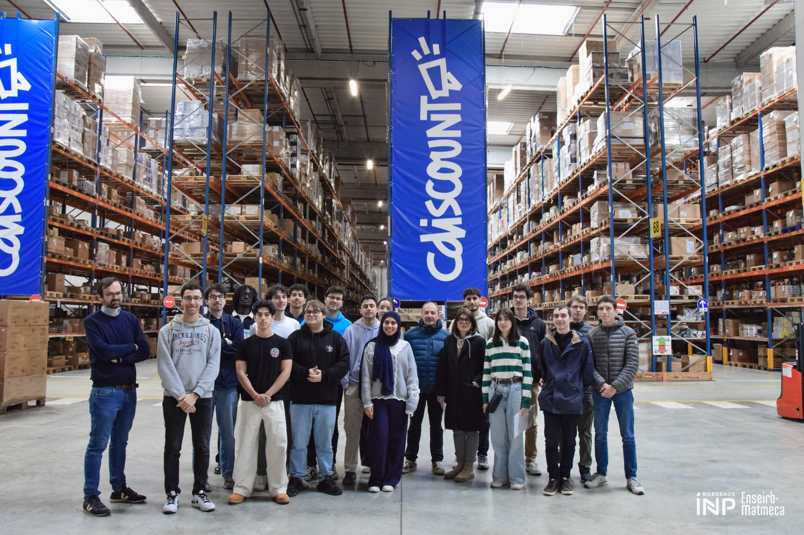
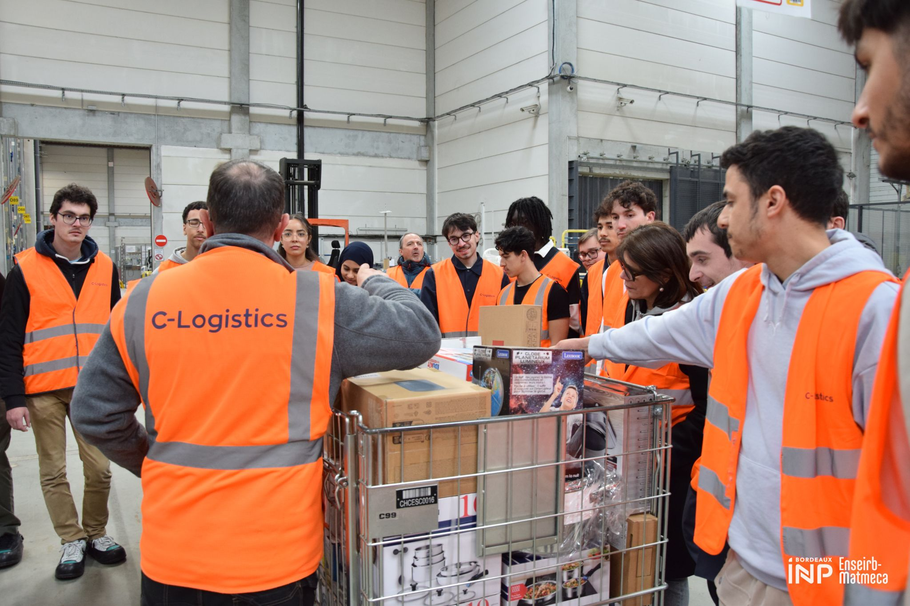
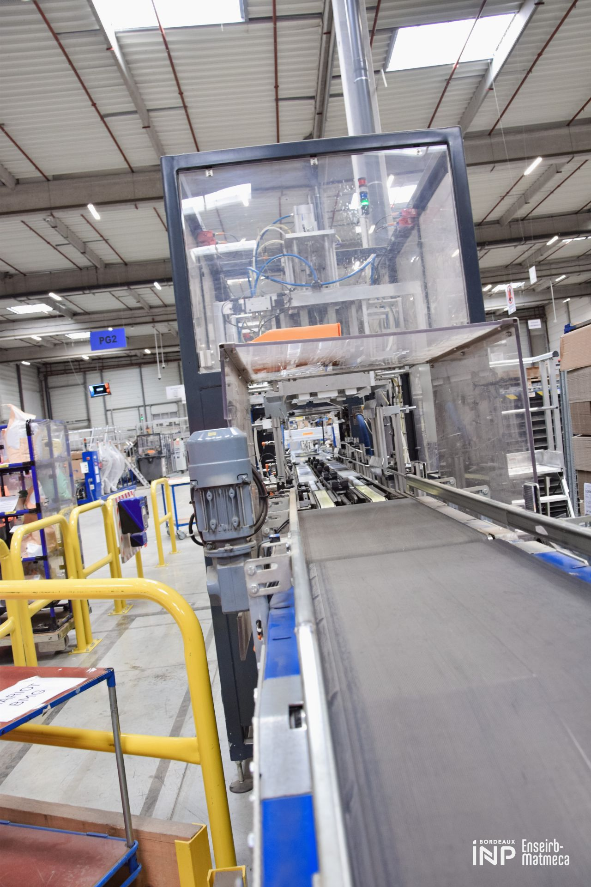
Principaux laboratoires associés
🧪 CNRS
Centre National de la Recherche Scientifique
Collaborations : Laboratoires mixtes, financement de thèses
💻 LaBRI
Laboratoire Bordelais de Recherche en Informatique
Collaborations : Algorithmique, IA, systèmes distribués
⚡ IMS
Institut d'Ingénierie et de Microélectronique et Systèmes
Collaborations : Traitement du signal, communications, électronique
Opportunités pour les étudiants
💼 Stages
Nos partenaires proposent régulièrement des stages de qualité aux étudiants de la filière
- Stage découverte (1A)
- Stage application (2A)
- Projet de fin d'études (3A)
🎓 Parcours ingénieur-docteur
Possibilité de poursuivre en thèse financée par l'entreprise
- Initiation à la recherche scientifique
- Immersion dans les travaux d'un doctorant
💻 Projets Encadrés
Projets S8 et S9 parrainés par des entreprises
- Cahiers des charges réels
- Suivi par des professionnels
- Matériel et ressources fournis
🎤 Interventions
Professionnels invités pour partager leur expertise
- Conférences thématiques
- Ateliers techniques
- Forums entreprises
Contact Relations Entreprises
📧 Vous êtes une entreprise ?
Vous souhaitez collaborer avec notre département ou proposer des stages/projets ?
📞 05.56.84.23.21 | 📧 sec_telecom@enseirb-matmeca.fr
Vie Étudiante
Insertion Professionnelle
Les ingénieurs diplômés bénéficient d'excellentes perspectives de carrière riches et variées.
Répartition des diplômés
🌍 Zones Géographiques
- Nouvelle-Aquitaine : 37%
- Île-de-France : 37%
- Occitanie : 10%
- International : 3%
- Autres régions : 13%
🏢 Secteurs d'Activités
- Conseil, bureaux d'études : 50%
- Informatique et services : 29%
- Industrie des TIC : 8%
- Aéronautique, spatial : 5%
- Autres secteurs : 8%
Métiers visés
- Ingénieur études et développement
- Ingénieur concepteur de systèmes
- Développeur d'applications
- Ingénieur de recherche
- Chef de projet
- Ingénieur réseaux / Architecte
- Ingénieur traitement signal et image
- Ingénieur technico-commercial
- Ingénieur d'affaires
- Consultant
Associations et Activités
🎉 Bureau Des Élèves (BDE)
Organisation d'événements, soirées, week-ends d'intégration
💼 Junior Entreprise
Réalisation de missions pour des clients réels
🤖 Club Robotique
Participation aux compétitions nationales
📡 Association Telecom
Conférences techniques, hackathons, ateliers
⚽ Sports
Plus de 20 activités sportives proposées
FAQ — Questions Fréquentes
Admission
Voies d'admission
📚 Concours Commun INP (CCINP)
- Filière MP : 17 places
- Filière MPI : 7 places
- Filière PC : 7 places
- Filière PSI : 18 places
- Filière TSI : 1 place
- Filière PT : 1 place
🎓 Classes Préparatoires Intégrées
- La Prépa des INP : 3 places
- CPBx (Bordeaux) : 3 places
- Licence renforcée Poitiers : 1 place
- Licence renforcée Toulon : 1 place
📝 Concours Pass'Ingénieur
- L2 ou L3 à l'université : 1 place
🎯 Recrutement sur Titres
- En 1ère année (BUT/Licence) : 4 places
- En 2ème année (Master 1) : selon disponibilités
Droits de scolarité
| Catégorie | Montant |
|---|---|
| Élèves communautaires | 628 € par an |
| Élèves extracommunautaires (1ère année) | 3 941 € |
| Élèves extracommunautaires (réinscription) | 628 € |
| Année de césure | 419 € |
| Cotisation vie étudiante (CVEC) | 105 € par an |
Tarifs en vigueur pour l'année 2025-2026
Contact & Informations Pratiques
📞 Filière Télécommunications
Téléphone : 05.56.84.23.21
Email : sec_telecom@enseirb-matmeca.fr
📋 Direction des Études
Téléphone : 05.56.84.65.09
Email : etudes@enseirb-matmeca.fr
📧 Candidatures
Email : candidater-enseirbmatmeca@bordeaux-inp.fr
Plateforme : eCandidat
Période : 13 mars – 22 mai 2025
📍 Campus Talence
ENSEIRB-MATMECA — Bordeaux INP
1 avenue du Docteur Schweitzer
33400 Talence